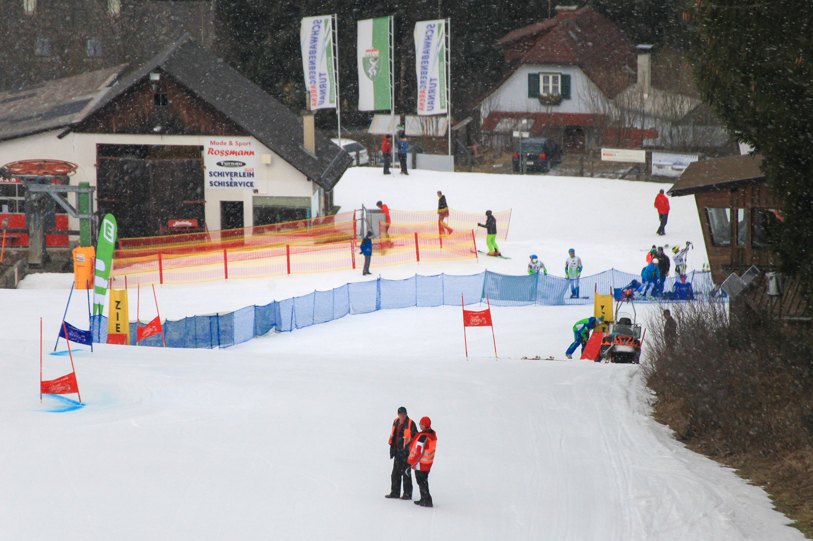

Home / Preise & Angebote
Schwabenbergarena Turnau
Stundenkarten, Zeitwertkarten, Tages- und Mehrtagestickets, Saisonkarten und mehr – alle aktuellen Preise auf einen Blick.
Saison 2026/27
Rufen Sie uns an oder schreiben Sie uns – so sichern Sie sich Ihr Ticket: +43 3863 2888 oder schwabenbergarena@aon.at.
Skipässe
Erwachsene · Jugend & Senioren · Kinder — gültig an jedem Betriebstag und jeder geöffneten Anlage.
| Ticket | Erw. | Jug. u. Sen. | Kinder |
|---|---|---|---|
| 2 Stunden | 34,00 | 33,00 | 25,00 |
| 3 Stunden | 36,00 | 35,00 | 26,00 |
| 4 Stunden | 38,00 | 36,00 | 27,00 |
| Zeitwertkarte | |||
| 10 Stundenkarte | 126,00 | 121,00 | 83,00 |
| Jede angefangene Stunde wird abgebucht. Die Zeitwertkarte ist 1 Saison gültig – Reststunden können in der nächsten Saison eingelöst werden. Das ideale Geschenk! | |||
| Gipfelstürmerticket | |||
| 3 × Einzelfahrt – 1 Punkt pro Lift | 24,00 | 23,00 | 13,00 |
| Ticket | Erw. | Jug. u. Sen. | Kinder |
|---|---|---|---|
| Tageskarten | |||
| ab 9:00 Uhr | 46,00 | 45,00 | 29,00 |
| ab 11:00 Uhr | 44,00 | 43,00 | 27,00 |
| ab 13:00 Uhr | 36,00 | 35,00 | 26,00 |
| Vormittagskarte 9:00–12:30 Uhr | 35,00 | 34,00 | 26,00 |
| Mehrtageskarten | |||
| 2 Tage | 92,00 | 88,00 | 58,00 |
| 3 Tage | 126,00 | 121,00 | 83,00 |
| 4 Tage | 161,00 | 151,00 | 108,00 |
| 5 Tage | 196,00 | 181,00 | 133,00 |
| 6 Tage | 228,00 | 210,00 | 160,00 |
| 7 Tage | 258,00 | 235,00 | 180,00 |
| Ticket | Erw. | Jugend | Kinder |
|---|---|---|---|
| Familienkarten | |||
| Tageskarte | 39,00 | 39,00 | 26,00 |
| 4 Stunden Karte | 34,00 | 34,00 | 25,00 |
| Nur bei gemeinsamem Kauf und Vorlage des Familienpasses erhältlich. Die erste Karte muss eine Erwachsenenkarte sein. | |||
| Busgruppen | |||
| Tageskarte | 41,00 | 41,00 | 27,00 |
| Busgruppenkarte ab 12 Personen und gemeinsamem Kauf erhältlich. | |||
| Schulskikurs-Tarife | |||
| bis 3 Stunden | 10,00 | ||
| ab 3 Stunden | 11,00 | ||
| Lehrpersonen frei! Preise für Schulskikurse während der Schulzeit. | |||
| Preis bis 15. Dezember | Bambini | Kinder | Jugend | Erw. |
|---|---|---|---|---|
| Vor 16. Dezember | 74,00 | 269,00 | 339,00 | 449,00 |
| Ab 16. Dezember | 74,00 | 285,00 | 362,00 | 485,00 |
| Die Saisonkarte gilt an jedem Betriebstag und jeder geöffneten Anlage. Die Bambini-Saisonkarte gilt für alleinfahrende Kinder unter 6 Jahren – in Begleitung eines skifahrenden Erwachsenen fahren Bambinis gratis. | ||||
Nachtskifahren
Erwachsene 34,00 · Jugend u. Senioren 33,00 · Kinder 25,00
Jänner & Februar, Fr/Sa 18:30–20:30 Uhr. Gültig: Nachtkarten, Zeitwertkarten, Schwabi-VIP-Card, Ostalpencard, Mur-Mürz-Skipass (Steiermark Joker nicht gültig). Skiverleih nur gegen Voranmeldung.
Tourengeher
Tourengeher-Tageskarte 10,00 · Tourengeher-Saisonkarte 74,00
Tourengehen während der Tagesbetriebszeit 9:00–16:00 Uhr. Das Ticket ist an der Kassa der Schwabenbergarena erhältlich. Die Pisten sind außerhalb der Betriebszeiten gesperrt.
Der Skipass ist nicht übertragbar (Ausnahme 10-Stunden-Saisonkarte). Missbrauch von Skipässen hat den Entzug des Skipasses und Beförderungsausschluss zur Folge. Kein Ersatz für vergessene oder verlorene Skipässe. Eine Rückvergütung kann nur bei Sportverletzungen mit ärztlichem Attest erfolgen. Keine Rückvergütung bei Schlechtwetter, Betriebseinstellungen, Pistensperren, Schließung einzelner Lifte, Pisten und vorzeitiger Abreise.
Bitte beachten Sie die FIS-Sicherheitsregeln. Die an den Liftanlagen aushängenden Beförderungsbestimmungen sowie im Interesse der Sicherheit und Ordnung sonst getroffenen Anordnungen des Betriebspersonals sind einzuhalten.